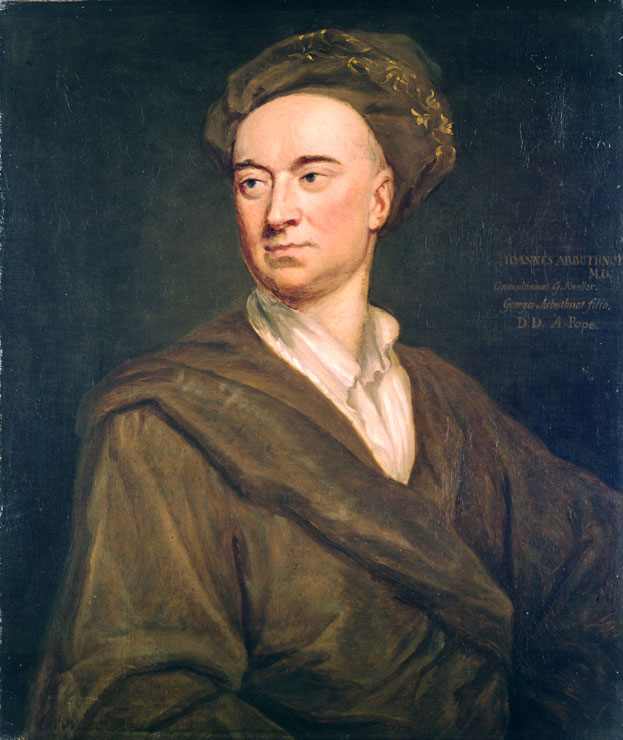

25:00
Lab: Arbuthnot
The Goal of Labs
Put concepts into practice with real data
Follow best practices in reproducible analyses (.qmd)
In class we’ll work on the most challenging problems
You likely will need to work outside of class to finish the assignment
Visit office hours for extra help or ask on named thread on Ed
Lab: Arbuthnot
What is the chance that a child born tomorrow is a girl?
Most students will volunteer 50%. Follow up with:
Why do you think it’s 50%? How did you come to that number? - Did you read it somewhere? - Did you hear it from someone?
If you wanted to confirm it was 50% what would you do? - [likely answer: google it]
What source for that number would you likely come across if you kept digging? - ultimately, maybe some scientific article.
What would their evidence for that claim of 50%? - likely vast amounts of demographic / census data
. . .
50%?
. . .
What evidence do we ultimately rely upon?
. . .
Vast amounts of data
Now consider the case of a scientist who tackled this question long before google was around.
Dr. John Arbuthnot
- 1667 - 1735
- Scottish physician, mathematician, satirist
- Interested in the question of what the proportion of girls to boys was at birth

Read a bit about Arbuthnot on wikipedia to learn some of his backstory.
Arbuthnot’s London
- 1710, St. Paul’s Cathedral completed
- Very few paved streets
- Definitely no google

Arbuthnot was living in London while thinking about this problem. It was a period of rapid growth and modernization for the city but it still had no google.
Main point to get across here: what we take for granted in terms of how we reason from data was nearly absent from life in 18th century UK. Most people would reason from direct experience, anecdote, appeals to tradition or religion, etc.
If you were Dr. Arbuthnot and you tell the person on the street: “My wife will soon be giving birth. What are the chances it’s a girl?”, what sort of answer do you think he might get? What type of information might that person be relying upon? - their own experience (the ratio of girls born in their family) - anecdotes that they’ve heard from others
You may want to note that even our notion of “chance” and probability was not wide spread at the time.
Arbuthnot’s work is notable because he takes the big step of realizing that an individual can learn a lot by pooling the experiences / anecdotes of others in a systematic way.
Where could Arbuthnot find vast amounts on systematically collected data regarding births?
. . .
The church.
The church is the only organization that is collecting systematic demographic data in this era.
Most children, shortly after they’re born, are taken to the nearby parish church and “christened” - given a name in the church. The parish churches record the name and date of each of these christenings.
Arbuthnot went from parish church to parish church in London, pored over these records and tallied the number of boys and girls. He then combined these counts across all of the parishes and created a data set that we can read into R today.
What is a christening record?
. . .
A Christening is a ceremony/rite in the Church of England where:
The parents bring their new born child to a priest at the church.
As part of the ceremony, the parents give a first name to the child before the child is baptized (inducted into the church).
The name of the child and their parents are recorded in a ledger.
. . .
John Arbuthnot tabulated the total count of names in each year that were traditionally female and male names.
Your Lab Assignment
Lab 1.1: Understanding the Context of the Data
- Learn context
- Formulate questions
- Set expectations
- Submitted as pdf of worksheet
Lab 1.2: Computing with the Data
- Dive into the data
- Submitted as a pdf from a qmd.